COMPUTING DEVICES ARE UBIQUITOUS in the modern world. In the last several decades, we have evolved from a world where computing devices were virtually unknown to a world where billions of people use them regularly. Moreover, today’s cellphones are orders of magnitude more powerful than the supercomputers that were available only to the privileged few as little as 30 years ago. But many of the underlying algorithms that enable these devices to work effectively are the same ones that we have studied in this book. Why? Survival of the fittest. Scalable (linear and linearithmic) algorithms have played a central role in the process and validate the idea that efficient algorithms are important. Researchers of the 1960s and 1970s built the basic infrastructure that we now enjoy with such algorithms. They knew that scalable algorithms are the key to the future; the developments of the past several decades have validated that vision. Now that the infrastructure is built, people are beginning to use it, for all sorts of purposes. As B. Chazelle has famously observed, the 20th century was the century of the equation, but the 21st century is the century of the algorithm.
Our treatment of fundamental algorithms in this book is only a starting point. The day is soon coming (if it is not already here) when one could build a college major around the study of algorithms. In commerical applications, scientific computing, engineering, operations research (OR), and countless other areas of inquiry too diverse to even mention, efficient algorithms make the difference between being able to solve problems in the modern world and not being able to address them at all. Our emphasis throughout this book has been to study important and useful algorithms. In this chapter, we reinforce this orientation by considering examples that illustrate the role of the algorithms that we have studied (and our approach to the study of algorithms) in several advanced contexts. To indicate the scope of the impact of the algorithms, we begin with a very brief description of several important areas of application. To indicate the depth, we later consider specific representative examples in detail and introduce the theory of algorithms. In both cases, this brief treatment at the end of a long book can only be indicative, not inclusive. For every area of application that we mention, there are dozens of others, equally broad in scope; for every point that we describe within an application, there are scores of others, equally important; and for every detailed example we consider, there are hundreds if not thousands of others, equally impactful.
The emergence of the internet has underscored the central role of algorithms in commercial applications. All of the applications that you use regularly benefit from the classic algorithms that we have studied:
• Infrastructure (operating systems, databases, communications)
• Applications (email, document processing, digital photography)
• Publishing (books, magazines, web content)
• Networks (wireless networks, social networks, the internet)
• Transaction processing (financial, retail, web search)
As a prominent example, we consider in this chapter B-trees, a venerable data structure that was developed for mainstream computers of the 1960s but still serve as the basis for modern database systems. We will also discuss suffix arrays, for text indexing.
Since von Neumann developed mergesort in 1950, algorithms have played a central role in scientific computing. Today’s scientists are awash in experimental data and are using both mathematical and computational models to understand the natural world for:
• Mathematical calculations (polynomials, matrices, differential equations)
• Data processing (experimental results and observations, especially genomics)
• Computational models and simulation
All of these can require complex and extensive computing with huge amounts of data. As a detailed example of an application in scientific computing, we consider in this chapter a classic example of event-driven simulation. The idea is to maintain a model of a complicated real-world system, controlling changes in the model over time. There are a vast number of applications of this basic approach. We also consider a fundamental data-processing problem in computational genomics.
Almost by definition, modern engineering is based on technology. Modern technology is computer-based, so algorithms play a central role for
• Mathematical calculations and data processing
• Computer-aided design and manufacturing
• Algorithm-based engineering (networks, control systems)
• Imaging and other medical systems
Engineers and scientists use many of the same tools and approaches. For example, scientists develop computational models and simulations for the purpose of understanding the natural world; engineers develop computational models and simulations for the purpose of designing, building, and controlling they artifacts they create.
Researchers and practitioners in OR develop and apply mathematical models for problem solving, including
• Scheduling
• Decision making
• Assignment of resources
The shortest-paths problem of SECTION 4.4 is a classic OR problem. We revisit this problem and consider the maxflow problem, illustrate the importance of reduction, and discuss implications for general problem-solving models, in particular the linear programming model that is central in OR.
ALGORITHMS PLAY AN IMPORTANT ROLE in numerous subfields of computer science with applications in all of these areas, including, but certainly not limited to
• Computational geometry
• Cryptography
• Databases
• Programming languages and systems
• Artificial intelligence
In each field, articulating problems and finding efficient algorithms and data structures for solving them play an essential role. Some of the algorithms we have studied apply directly; more important, the general approach of designing, implementing, and analyzing algorithms that lies at the core of this book has proven successful in all of these fields. This effect is spreading beyond computer science to many other areas of inquiry, from games to music to linguistics to finance to neuroscience.
So many important and useful algorithms have been developed that learning and understanding relationships among them are essential. We finish this section (and this book!) with an introduction to the theory of algorithms, with particular focus on intractability and the P=NP? question that still stands as the key to understanding the practical problems that we aspire to solve.
Our first example is a fundamental scientific application: simulate the motion of a system of moving particles that behave according to the laws of elastic collision. Scientists use such systems to understand and predict properties of physical systems. This paradigm embraces the motion of molecules in a gas, the dynamics of chemical reactions, atomic diffusion, sphere packing, the stability of the rings around planets, the phase transitions of certain elements, one-dimensional self-gravitating systems, front propagation, and many other situations. Applications range from molecular dynamics, where the objects are tiny subatomic particles, to astrophysics, where the objects are huge celestial bodies.
Addressing this problem requires a bit of high-school physics, a bit of software engineering, and a bit of algorithmics. We leave most of the physics for the exercises at the end of this section so that we can concentrate on the topic at hand: using a fundamental algorithmic tool (heap-based priority queues) to address an application, enabling calculations that would not otherwise be possible.
We begin with an idealized model of the motion of atoms or molecules in a container that has the following salient features:
• Moving particles interact via elastic collisions with each other and with walls.
• Each particle is a disc with known position, velocity, mass, and radius.
• No other forces are exerted.
This simple model plays a central role in statistical mechanics, a field that relates macroscopic observables (such as temperature and pressure) to microscopic dynamics (such as the motion of individual atoms and molecules). Maxwell and Boltzmann used the model to derive the distribution of speeds of interacting molecules as a function of temperature; Einstein used the model to explain the Brownian motion of pollen grains immersed in water. The assumption that no other forces are exerted implies that particles travel in straight lines at constant speed between collisions. We could also extend the model to add other forces. For example, if we add friction and spin, we can more accurately model the motion of familiar physical objects such as billiard balls on a pool table.
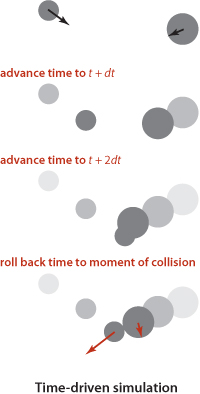
Our primary goal is simply to maintain the model: that is, we want to be able to keep track of the positions and velocities of all the particles as time passes. The basic calculation that we have to do is the following: given the positions and velocities for a specific time t, update them to reflect the situation at a future time t+dt for a specific amount of time dt. Now, if the particles are sufficiently far from one another and from the walls that no collision will occur before t+dt, then the calculation is easy: since particles travel in a straight-line trajectory, we use each particle’s velocity to update its position. The challenge is to take the collisions into account. One approach, known as time-driven simulation, is based on using a fixed value of dt. To do each update, we need to check all pairs of particles, determine whether or not any two occupy the same position, and then back up to the moment of the first such collision. At that point, we are able to properly update the velocities of the two particles to reflect the collision (using calculations that we will discuss later). This approach is computationally intensive when simulating a large number of particles: if dt is measured in seconds (fractions of a second, usually), it takes time proportional to N2/dt to simulate an N-particle system for 1 second. This cost is prohibitive (even worse than usual for quadratic algorithms)—in the applications of interest, N is very large and dt is very small. The challenge is that if we make dt too small, the computational cost is high, and if we make dt too large, we may miss collisions.
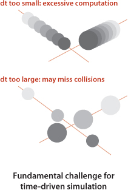
We pursue an alternative approach that focuses only on those times at which collisions occur. In particular, we are always interested in the next collision (because the simple update of all of the particle positions using their velocities is valid until that time). Therefore, we maintain a priority queue of events, where an event is a potential collision sometime in the future, either between two particles or between a particle and a wall. The priority associated with each event is its time, so when we remove the minimum from the priority queue, we get the next potential collision.
How do we identify potential collisions? The particle velocities provide precisely the information that we need. For example, suppose that we have, at time t, a particle of radius s at position (rx, ry) moving with velocity (vx, vy) in the unit box. Consider the vertical wall at x = 1 with y between 0 and 1. Our interest is in the horizontal component of the motion, so we can concentrate on the x-component of the position rx and the x-component of the velocity vx. If vx is negative, the particle is not on a collision course with the wall, but if vx is positive, there is a potential collision with the wall. Dividing the horizontal distance to the wall (1 − s − rx) by the magnitude of the horizontal component of the velocity (vx) we find that the particle will hit the wall after dt = (1 − s − rx)/vx time units, when the particle will be at (1 − s, ry + vy dt), unless it hits some other particle or a horizontal wall before that time. Accordingly, we put an entry on the priority queue with priority t + dt (and appropriate information describing the particle-wall collision event). The collision-prediction calculations for other walls are similar (see EXERCISE 6.1). The calculation for two particles colliding is also similar, but more complicated. Note that it is often the case that the calculation leads to a prediction that the collision will not happen (if the particle is moving away from the wall, or if two particles are moving away from one another)—we do not need to put anything on the priority queue in such cases. To handle another typical situation where the predicted collision might be too far in the future to be of interest, we include a parameter limit that specifies the time period of interest, so we can also ignore any events that are predicted to happen at a time later than limit.
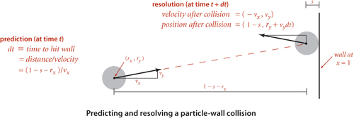
When a collision does occur, we need to resolve it by applying the physical formulas that specify the behavior of a particle after an elastic collision with a reflecting boundary or with another particle. In our example where the particle hits the vertical wall, if the collision does occur, the velocity of the particle will change from (vx, vy) to (– vx, vy) at that time. The collision-resolution calculations for other walls are similar, as are the calculations for two particles colliding, but these are more complicated (see EXERCISE 6.1).
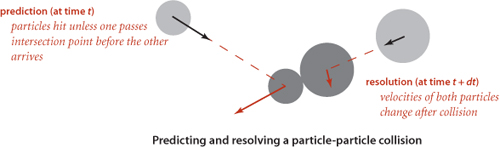
Many of the collisions that we predict do not actually happen because some other collision intervenes. To handle this situation, we maintain an instance variable for each particle that counts the number of collisions in which it has been involved. When we remove an event from the priority queue for processing, we check whether the counts corresponding to its particle(s) have changed since the event was created. This approach to handling invalidated collisions is the so-called lazy approach: when a particle is involved in a collision, we leave the now-invalid events associated with it on the priority queue and essentially ignore them when they come off. An alternative approach, the so-called eager approach, is to remove from the priority queue all events involving any colliding particle before calculating all of the new potential collisions for that particle. This approach requires a more sophisticated priority queue (that implements the remove operation).
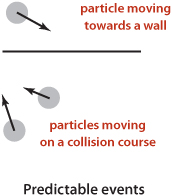
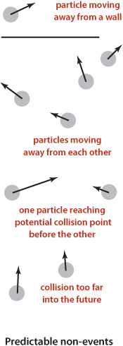
THIS DISCUSSION sets the stage for a full event-driven simulation of particles in motion, interacting according to the physical laws of elastic collisions. The software architecture is to encapsulate the implementation in three classes: a Particle data type that encapsulates calculations that involve particles, an Event data type for predicted events, and a CollisionSystem client that does the simulation. The centerpiece of the simulation is a MinPQ that contains events, ordered by time. Next, we consider implementations of Particle, Event, and CollisionSystem.
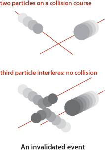
EXERCISE 6.1 outlines the implementation of a data type particles, based on a direct application of Newton’s laws of motion. A simulation client needs to be able to move particles, draw them, and perform a number of calculations related to collisions, as detailed in the following API:
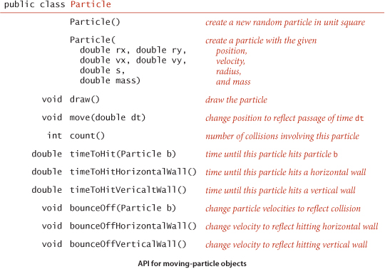
The three timeToHit*() methods all return Double.POSITIVE_INFINITY for the (rather common) case when there is no collision course. These methods allow us to predict all future collisions that are associated with a given particle, putting an event on a priority queue corresponding to each one that happens before a given time limit. We use the bounce() method each time that we process an event that corresponds to two particles colliding to change the velocities (of both particles) to reflect the collision, and the bounceOff*() methods for events corresponding to collisions between a particle and a wall.
We encapsulate in a private class the description of the objects to be placed on the priority queue (events). The instance variable time holds the time when the event is predicted to happen, and the instance variables a and b hold the particles associated with the event. We have three different types of events: a particle may hit a vertical wall, a horizontal wall, or another particle. To develop a smooth dynamic display of the particles in motion, we add a fourth event type, a redraw event that is a command to draw all the particles at their current positions. A slight twist in the implementation of Event is that we use the fact that particle values may be null to encode these four different types of events, as follows:
• Neither a nor b null: particle-particle collision
• a not null and b null: collision between a and a vertical wall
• a null and b not null: collision between b and a horizontal wall
• Both a and b null: redraw event (draw all particles)
While not the finest object-oriented programming, this convention is a natural one that enables straightforward client code and leads to the implementation shown below.
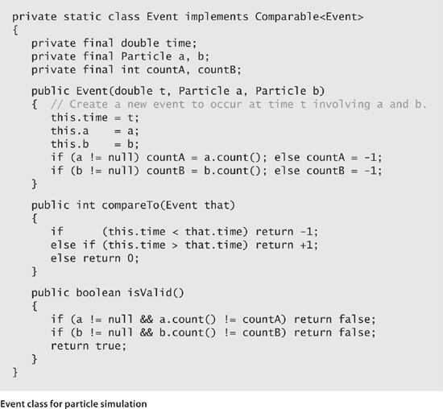
A second twist in the implementation of Event is that we maintain the instance variables countA and countB to record the number of collisions involving each of the particles at the time the event is created. If these counts are unchanged when the event is removed from the priority queue, we can go ahead and simulate the occurrence of the event, but if one of the counts changes between the time an event goes on the priority queue and the time it leaves, we know that the event has been invalidated and can ignore it. The method isValid() allows client code to test this condition.
With the computational details encapsulated in Particle and Event, the simulation itself requires remarkably little code, as you can see in the implementation in the class CollisionSystem (see page 863 and page 864). Most of the calculations are encapsulated in the predictCollisions() method shown on this page. This method calculates all potential future collisions involving particle a (either with another particle or with a wall) and puts an event corresponding to each onto the priority queue.
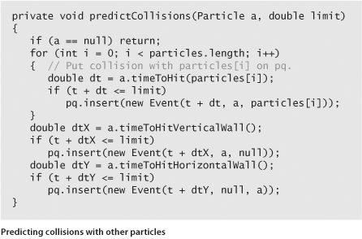
The heart of the simulation is the simulate() method shown on page 864. We initialize by calling predictCollisions() for each particle to fill the priority queue with the potential collisions involving all particle-wall and all particle-particle pairs. Then we enter the main event-driven simulation loop, which works as follows:
• Delete the impending event (the one with minimum priority t).
• If the event is invalid, ignore it.
• Advance all particles to time t on a straight-line trajectory.
• Update the velocities of the colliding particle(s).
• Use predictCollisions() to predict future collisions involving the colliding particle(s) and insert onto the priority queue an event corresponding to each.
This simulation can serve as the basis for computing all manner of interesting properties of the system, as explored in the exercises. For example, one fundamental property of interest is the amount of pressure exerted by the particles against the walls. One way to calculate the pressure is to keep track of the number and magnitude of wall collisions (an easy computation based on particle mass and velocity) so that we can easily compute the total. Temperature involves a similar calculation.
As described at the outset, our interest in event-driven simulation is to avoid the computationally intensive inner loop intrinsic in time-driven simulation.
Using our standard guaranteed-logarithmic-time-per operation priority-queue implementation from SECTION 2.4, the time needed per collision is linearithmic. Simulations with large numbers of particles are therefore quite feasible.
EVENT-DRIVEN SIMULATION applies to countless other domains that involve physical modeling of moving objects, from molecular modeling to astrophysics to robotics. Such applications may involve extending the model to add other kinds of bodies, to operate in three dimensions, to include other forces, and in many other ways. Each extension involves its own computational challenges. This event-driven approach results in a more robust, accurate, and efficient simulation than many other alternatives that we might consider, and the efficiency of the heap-based priority queue enables calculations that might not otherwise be possible.
Simulation plays a vital role in helping researchers to understand properties of the natural world in all fields of science and engineering. Applications ranging from manufacturing processes to biological systems to financial systems to complex engineered structures are too numerous to even list here. For a great many of these applications, the extra efficiency afforded by the heap-based priority queue data type or an efficient sorting algorithm can make a substantial difference in the quality and extent that are possible in the simulation.
In CHAPTER 3, we saw that algorithms that are appropriate for accessing items from huge collections of data are of immense practical importance. Searching is a fundamental operation on huge data sets, and such searching consumes a significant fraction of the resources used in many computing environments. With the advent of the web, we have the ability to access a vast amount of information that might be relevant to a task—our challenge is to be able to search through it efficiently. In this section, we describe a further extension of the balanced-tree algorithms from SECTION 3.3 that can support external search in symbol tables that are kept on a disk or on the web and are thus potentially far larger than those we have been considering (which have to fit in addressable memory). Modern software systems are blurring the distinction between local files and web pages, which may be stored on a remote computer, so the amount of data that we might wish to search is virtually unlimited. Remarkably, the methods that we shall study can support search and insert operations on symbol tables containing trillions of items or more using only four or five references to small blocks of data.
Data storage mechanisms vary widely and continue to evolve, so we use a simple model to capture the essentials. We use the term page to refer to a contiguous block of data and the term probe to refer to the first access to a page. We assume that accessing a page involves reading its contents into local memory, so that subsequent accesses are relatively inexpensive. A page could be a file on your local computer or a web page on a distant computer or part of a file on a server, or whatever. Our goal is to develop search implementations that use a small number of probes to find any given key. We avoid making specific assumptions about the page size and about the ratio of the time required for a probe (which presumably requires communicating with a distant device) to the time required, subsequently, to access items within the block (which presumably happens in a local processor). In typical situations, these values are likely to be on the order of 100 or 1,000 or 10,000; we do not need to be more precise because the algorithms are not highly sensitive to differences in the values in the ranges of interest.
The approach is to extend the 2-3 tree data structure described in SECTION 3.3, with a crucial difference: rather than store the data in the tree, we build a tree with copies of the keys, each key copy associated with a link. This approach enables us to more easily separate the index from the table itself, much like the index in a book. As with 2-3 trees, we enforce upper and lower bounds on the number of key-link pairs that can be in each node: we choose a parameter M (an even number, by convention) and build multiway trees where every node must have at most M − 1 key-link pairs (we assume that M is sufficiently small that an M-way node will fit on a page) and at least M/2 key-link pairs (to provide the branching that we need to keep search paths short), except possibly the root, which can have fewer than M/2 key-link pairs but must have at least 2. Such trees were named B-trees by Bayer and McCreight, who, in 1970, were the first researchers to consider the use of multiway balanced trees for external searching. Some people reserve the term B-tree to describe the exact data structure built by the algorithm suggested by Bayer and McCreight; we use it as a generic term for data structures based on multiway balanced search trees with a fixed page size. We specify the value of M by using the terminology “B-tree of order M.” In a B-tree of order 4, each node has at most 3 and at least 2 key-link pairs; in a B-tree of order 6, each node has at most 5 and at least 3 link pairs (except possibly the root, which could have 2 key-link pairs), and so forth. The reason for the exception at the root for larger M will become clear when we consider the construction algorithm in detail.
To illustrate the basic mechanisms, we consider an (ordered) SET implementation (with keys and no values). Extending to provide an ordered ST to associate keys with values is an instructive exercise (see EXERCISE 6.16). Our goal is to support add() and contains() for a set of keys that could be huge. We use ordered keys because we are generalizing search trees, which are based on ordered keys. Extending our implementation to support other ordered operations is also an instructive exercise. In external searching applications, it is common to keep the index separate from the data. For B-trees, we do so by using two different kinds of nodes:
• Internal nodes, which associate copies of keys with pages
• External nodes, which have references to the actual data
Every key in an internal node is associated with another node that is the root of a tree containing all keys greater than or equal to that key and less than the next largest key, if any. It is convenient to use a special key, known as a sentinel, that is defined to be less than all other keys, and to start with a root node containing that key, associated with the tree containing all the keys. The symbol table does not contain duplicate keys, but we use copies of keys (in internal nodes) to guide the search. (In our examples, we use single-letter keys and the character * as the sentinel that is less than all other keys.) These conventions simplify the code somewhat and thus represent a convenient (and widely used) alternative to mixing all the data with links in the internal nodes, as we have done for other search trees.
Search in a B-tree is based on recursively searching in the unique subtree that could contain the search key. Every search ends in an external node that contains the key if and only if it is in the set. We might also terminate a search hit when encountering a copy of the search key in an internal node, but we always search to an external node because doing so simplifies extending the code to an ordered symbol-table implementation (also, this event rarely happens when M is large). To be specific, consider searching in a B-tree of order 6: it consists of 3-nodes with 3 key-link pairs, 4-nodes with 4 key-link pairs, and 5-nodes with 5 key-link pairs, with possibly a 2-node at the root. To search, we start at the root and move from one node to the next by finding the proper interval for the search key in the current node and then exiting through the corresponding link to get to the next node. Eventually, the search process leads us to a page containing keys at the bottom of the tree. We terminate the search with a search hit if the search key is in that page; we terminate with a search miss if it is not. As with 2-3 trees, we can use recursive code to insert a new key at the bottom of the tree. If there is no room for the key, we allow the node at the bottom to temporarily overflow (become a 6-node) and then split 6-nodes on the way up the tree, after the recursive call. If the root is an 6-node, we split it into a 2-node connected to two 3-nodes; elsewhere in the tree, we replace any k-node attached to a 6-node by a (k+1)-node attached to two 3-nodes. Replacing 3 by M/2 and 6 by M in this description converts it into a description of search and insert for B-trees of order M and leads to the following definition:
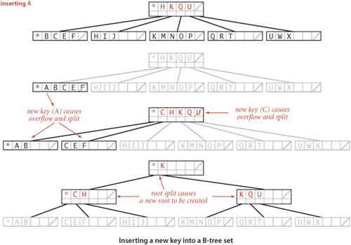
As just discussed, we have a great deal of freedom in choosing concrete representations for nodes in B-trees. We encapsulate these choices in a Page API that associates keys with links to Page objects and supports the operations that we need to test for overfull pages, split them, and distinguish between internal and external pages. You can think of a Page as a symbol table, kept externally (in a file on your computer or on the web). The terms open and close in the API refer to the process of bringing an external page into internal memory and writing its contents back out (if necessary). The add() method for internal pages is a symbol-table operation that associates the given page with the minimum key in the tree rooted at that page. The put() and contains() methods for external pages are like their corresponding SET operations. The workhorse of any implementation is the split() method, which splits a full page by moving the M/2 key-value pairs of rank greater than M/2 to a new Page and returns a reference to that page. EXERCISE 6.15 discusses an implementation of Page using BinarySearchST, which implements B-trees in memory, like our other search implementations. On some systems, this might suffice as an external searching implementation because a virtual-memory system might take care of disk references. More typical practical implementations might involve hardware-specific code that reads and writes pages. EXERCISE 6.19 encourages you to think about implementing Page using web pages. We ignore such details here in the text to emphasize the utility of the B-tree concept in a broad variety of settings.
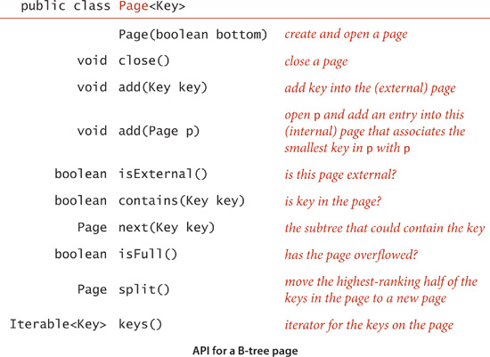
With these preparations, the code for BTreeSET on page 872 is remarkably simple. For contains(), we use a recursive method that takes a Page as argument and handles three cases:
• If the page is external and the key is in the page, return true.
• If the page is external and the key is not in the page, return false.
• Otherwise, do a recursive call for the subtree that could contain the key.
For put() we use the same recursive structure, but insert the key at the bottom if it is not found during the search and then split any full nodes on the way up the tree.
The most important property of B-trees is that for reasonable values of the parameter M the search cost is constant, for all practical purposes:
In typical situations, we can reduce the cost by one probe by keeping the root in internal memory. For searching on disk or on the web, we might take this step explicitly before embarking on any application involving a huge number of searches; in a virtual memory with caching, the root node will be the one most likely to be in fast memory, because it is the most frequently accessed node.
The space usage of B-trees is also of interest in practical applications. By construction, the pages are at least half full, so, in the worst case, B-trees use about double the space that is absolutely necessary for keys, plus extra space for links. For random keys, A. Yao proved in 1979 (using mathematical analysis that is beyond the scope of this book) that the average number of keys in a node is about M ln 2, so about 44 percent of the space is unused. As with many other search algorithms, this random model reasonably predicts results for key distributions that we observe in practice.
THE IMPLICATIONS OF PROPOSITION B ARE PROFOUND and worth contemplating. Would you have guessed that you can develop a search implementation that can guarantee a cost of four or five probes for search and insert in files as large as you can reasonably contemplate needing to process? B-trees are widely used because they allow us to achieve this ideal. In practice, the primary challenge to developing an implementation is ensuring that space is available for the B-tree nodes, but even that challenge becomes easier to address as available storage space increases on typical devices.
Many variations on the basic B-tree abstraction suggest themselves immediately. One class of variations saves time by packing as many page references as possible in internal nodes, thereby increasing the branching factor and flattening the tree. Another class of variations improves storage efficiency by combining nodes with siblings before splitting. The precise choice of variant and algorithm parameter can be engineered to suit particular devices and applications. Although we are limited to getting a small constant factor improvement, such an improvement can be of significant importance for applications where the table is huge and/or huge numbers of transactions are involved, precisely the applications for which B-trees are so effective.
Efficient algorithms for string processing play a critical role in commercial applications and in scientific computing. From the countless strings that define web pages that are searched by billions of users to the extensive genomic databases that scientists are studying to unlock the secret of life, computing applications of the 21st century are increasingly string-based. As usual, some classic algorithms are effective, but remarkable new algorithms are being developed. Next, we describe a data structure and an API that support some of these algorithms. We begin by describing a typical (and a classic) string-processing problem.
What is the longest substring that appears at least twice in a given string? For example, the longest repeated substring in the string "to be or not to be" is the string "to be". Think briefly about how you might solve it. Could you find the longest repeated substring in a string that has millions of characters? This problem is simple to state and has many important applications, including data compression, cryptography, and computer-assisted music analysis. For example, a standard technique used in the development of large software systems is refactoring code. Programmers often put together new programs by cutting and pasting code from old programs. In a large program built over a long period of time, replacing duplicate code by function calls to a single copy of the code can make the program much easier to understand and maintain. This improvement can be accomplished by finding long repeated substrings in the program. Another application is found in computational biology. Are substantial identical fragments to be found within a given genome? Again, the basic computational problem underlying this question is to find the longest repeated substring in a string. Scientists are typically interested in more detailed questions (indeed, the nature of the repeated substrings is precisely what scientists seek to understand), but such questions are certainly no easier to answer than the basic question of finding the longest repeated substring.
As a warmup, consider the following simple task: given two strings, find their longest common prefix (the longest substring that is a prefix of both strings). For example, the longest common prefix of acctgttaac and accgttaa is acc. The code at right is a useful starting point for addressing more complicated tasks: it takes time proportional to the length of the match. Now, how do we find the longest repeated substring in a given string? With lcp(), the following brute-force solution immediately suggests itself: we compare the substring starting at each string position i with the substring starting at each other starting position j, keeping track of the longest match found. This code is not useful for long strings, because its running time is at least quadratic in the length of the string: the number of different pairs i and j is N (N−1)/2, so the number of calls on lcp() for this approach would be ~N2/2. Using this solution for a genomic sequence with millions of characters would require trillions of lcp() calls, which is infeasible.
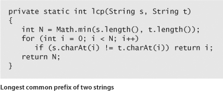
The following clever approach, which takes advantage of sorting in an unexpected way, is an effective way to find the longest repeated substring, even in a huge string: we use Java’s substring() method to make an array of strings that consists of the suffixes of s (the substrings starting at each position and going to the end), and then we sort this array. The key to the algorithm is that every substring appears somewhere as a prefix of one of the suffixes in the array. After sorting, the longest repeated substrings will appear in adjacent positions in the array. Thus, we can make a single pass through the sorted array, keeping track of the longest matching prefixes between adjacent strings. This approach is significantly more efficient than the brute-force method, but before implementing and analyzing it, we consider another application of suffix sorting.
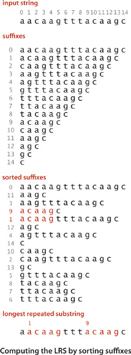
When you are trying to find a particular substring within a large text—for example, while working in a text editor or within a page you are viewing with a browser—you are doing a substring search, the problem we considered in SECTION 5.3. For that problem, we assume the text to be relatively large and focus on preprocessing the substring, with the goal of being able to efficiently find that substring in any given text. When you type search keys into your web browser, you are doing a search with string keys, the subject of SECTION 5.2. Your search engine must precompute an index, since it cannot afford to scan all the pages in the web for your keys. As we discussed in SECTION 3.5 (see FileIndex on page 501), this would ideally be an inverted index associating each possible search string with all web pages that contain it—a symbol table where each entry is a string key and each value is a set of pointers (each pointer giving the information necessary to locate an occurrence of the key on the web—perhaps a URL that names a web page and an integer offset within that page). In practice, such a symbol table would be far too big, so your search engine uses various sophisticated algorithms to reduce its size. One approach is to rank web pages by importance (perhaps using an algorithm like the PageRank algorithm that we discussed on page 502) and work only with highly-ranked pages, not all pages. Another approach to cutting down on the size of a symbol table to support search with string keys is to associate URLs with words (substrings delimited by whitespace) as keys in the precomputed index. Then, when you search for a word, the search engine can use the index to find the (important) pages containing your search keys (words) and then use substring search within each page to find them. But with this approach, if the text were to contain "everything" and you were to search for "thing", you would not find it. For some applications, it is worthwhile to build an index to help find any substring within a given text. Doing so might be justified for a linguistic study of an important piece of literature, for a genomic sequence that might be an object of study for many scientists, or just for a widely accessed web page. Again, ideally, the index would associate all possible substrings of the text string with each position where it occurs in the text string, as depicted at right. The basic problem with this ideal is that the number of possible substrings is too large to have a symbol-table entry for each of them (an N-character text has N (N−1)/2 substrings). The table for the example at right would need entries for b, be, bes, best, best o, best of, e, es, est, est o, est of, s, st, st o, st of, t, t o, t of, o, of, and many, many other substrings. Again, we can use a suffix sort to address this problem in a manner analogous to our first symbol-table implementation using binary search, in SECTION 3.1. We consider each of the N suffixes to be keys, create a sorted array of our keys (the suffixes), and use binary search to search in that array, comparing the search key with each suffix.
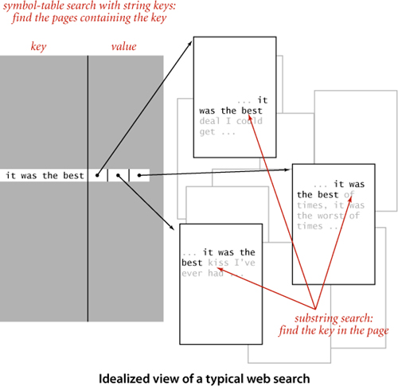
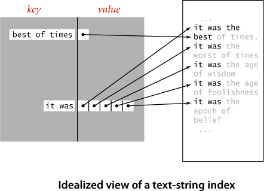
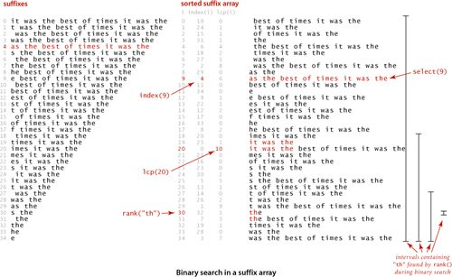
To support client code to solve these two problems, we articulate the API shown below. It includes a constructor; a length() method; methods select() and index(), which give the string and index of the suffix of a given rank in the sorted list of suffixes; a method lcp() that gives the length of the longest common prefix of each suffix and the one preceding it in the sorted list; and a method rank() that gives the number of suffixes less than the given key (just as we have been using since we first examined binary search in CHAPTER 1). We use the term suffix array to describe the abstraction of a sorted list of suffix strings, without necessarily committing to use an array of strings as the underlying data structure.
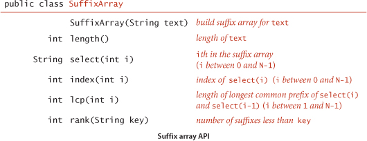
In the example on the facing page, select(9) is "as the best of times...", index(9) is 4, lcp(20) is 10 because "it was the best of times..." and "it was the" have the common prefix "it was the" which is of length 10, and rank("th") is 30. Note also that the select(rank(key)) is the first possible suffix in the sorted suffix list that has key as prefix and that all other occurrences of key in the text immediately follow (see the figure on the opposite page). With this API, the client code on the next two pages is immediate. LRS (page 880) finds the longest repeated substring in the text on standard input by building a suffix array and then scanning through the sorted suffixes to find the maximum lcp() value. KWIC (page 881) builds a suffix array for the text named as command-line argument, takes queries from standard input, and prints all occurrences of each query in the text (including a specified number of characters before and after to give context). The name KWIC stands for keyword-in-context search, a term dating at least to the 1960s. The simplicity and efficiency of this client code for these typical string-processing applications is remarkable, and testimony to the importance of careful API design (and the power of a simple but ingenious idea).
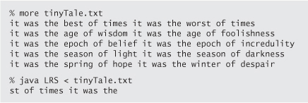
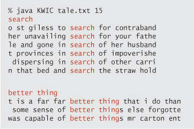
The code on the facing page is a straightforward implementation of the SuffixArray API. Its instance variables are an array of strings and (for economy in code) a variable N that holds the length of the array (the length of the string and its number of suffixes). The constructor builds the suffix array and sorts it, so select(i) just returns suffixes[i]. The implementation of index() is also a one-liner, but it is a bit tricky, based on the observation that the length of the suffix string uniquely determines its starting point. The suffix of length N starts at position 0, the suffix of length N-1 starts at position 1, the suufix of length N-2 starts at position 2, and so forth, so index(i) just returns N - suffixes[i].length(). The implementation of lcp() is immediate, given the static method lcp() on page 875, and rank() is virtually the same as our implementation of binary search for symbol tables, on page 381. Again, the simplicity and elegance of this implementation should not mask the fact that it is a sophisticated algorithm that enables solution of important problems like the longest repeated substring problem that would otherwise seem to be infeasible.
The efficiency of suffix sorting depends on the fact that Java substring extraction uses a constant amount of space—each substring is composed of standard object overhead, a pointer into the original, and a length. Thus, the size of the index is linear in the size of the string. This point is a bit counterintuitive because the total number of characters in the suffixes is ~N2/2, a quadratic function of the size of the string. Moreover, that quadratic factor gives one pause when considering the cost of sorting the suffix array. It is very important to bear in mind that this approach is effective for long strings because of the Java representation for strings: when we exchange two strings, we are exchanging only references, not the whole string. Now, the cost of comparing two strings may be proportional to the length of the strings in the case when their common prefix is very long, but most comparisons in typical applications involve only a few characters. If so, the running time of the suffix sort is linearithmic. For example, in many applications, it is reasonable to use a random string model:
Our elementary implementation of SuffixArray has poor worst-case performance. For example, if all the characters are equal, the sort examines every character in each substring and thus takes quadratic time. For strings of the type we have been using as examples, such as genomic sequences or natural-language text, this is not likely to be problematic, but the algorithm can be slow for texts with long runs of identical characters. Another way of looking at the problem is to observe that the cost of finding the longest repeated substring is quadratic in the length of the substring because all of the prefixes of the repeat need to be checked (see the diagram at right). This is not a problem for a text such as A Tale of Two Cities, where the longest repeat
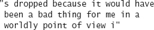
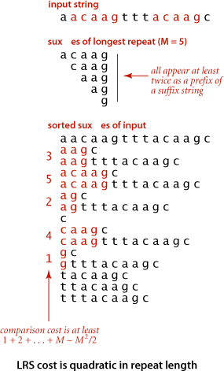
has just 84 characters, but it is a serious problem for genomic data, where long repeated substrings are not unusual. How can this quadratic behavior for repeat searching be avoided? Remarkably, research by P. Weiner in 1973 showed that it is possible to solve the longest repeated substring problem in guaranteed linear time. Weiner’s algorithm was based on building a suffix tree data structure (essentially a trie for suffixes). With multiple pointers per character, suffix trees consume too much space for many practical problems, which led to the development of suffix arrays. In the 1990s, U. Manber and E. Myers presented a linearithmic algorithm for building suffix arrays directly and a method that does preprocessing at the same time as the suffix sort to support constant-time lcp(). Several linear-time suffix sorting algorithms have been developed since. With a bit more work, the Manber-Myers implementation can also support a two-argument lcp() that finds the longest common prefix of two given suffixes that are not necessarily adjacent in guaranteed constant time, again a remarkable improvement over the straightforard implementation. These results are quite surprising, as they achieve efficiencies quite beyond what you might have expected.
A SuffixArray implementation based on these ideas supports efficient solutions of numerous string-processing problems, with simple client code, as in our LRS and KWIC examples.
SUFFIX ARRAYS ARE THE CULMINATION of decades of research that began with the development of tries for KWIC indices in the 1960s. The algorithms that we have discussed were worked out by many researchers over several decades in the context of solving practical problems ranging from putting the Oxford English Dictionary online to the development of the first web search engines to sequencing the human genome. This story certainly helps put the importance of algorithm design and analysis in context.
Next, we consider a graph model that has been successful not just because it provides us with a simply stated problem-solving model that is useful in many practical applications but also because we have efficient algorithms for solving problems within the model. The solution that we consider illustrates the tension between our quest for implementations of general applicability and our quest for efficient solutions to specific problems. The study of network-flow algorithms is fascinating because it brings us tantalizingly close to compact and elegant implementations that achieve both goals. As you will see, we have straightforward implementations that are guaranteed to run in time proportional to a polynomial in the size of the network.
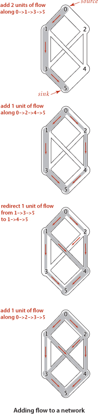
The classical solutions to network-flow problems are closely related to other graph algorithms that we studied in CHAPTER 4, and we can write surprisingly concise programs that solve them, using the algorithmic tools we have developed. As we have seen in many other situations, good algorithms and data structures can lead to substantial reductions in running times. Development of better implementations and better algorithms is still an area of active research, and new approaches continue to be discovered.
We begin with an idealized physical model in which several of the basic concepts are intuitive. Specifically, imagine a collection of interconnected oil pipes of varying sizes, with switches controlling the direction of flow at junctions, as in the example illustrated at right. Suppose further that the network has a single source (say, an oil field) and a single sink (say, a large refinery) to which all the pipes ultimately connect. At each vertex, the flowing oil reaches an equilibrium where the amount of oil flowing in is equal to the amount flowing out. We measure both flow and pipe capacity in the same units (say, gallons per second). If every switch has the property that the total capacity of the ingoing pipes is equal to the total capacity of the outgoing pipes, then there is no problem to solve: we simply fill all pipes to full capacity. Otherwise, not all pipes are full, but oil flows through the network, controlled by switch settings at the junctions, satisfying a local equilibrium condition at the junctions: the amount of oil flowing into each junction is equal to the amount of oil flowing out. For example, consider the network in the diagram on the opposite page. Operators might start the flow by opening the switches along the path 0->1->3->5, which can handle 2 units of flow, then open switches along the path 0->2->4->5 to get another unit of flow in the network. Since 0->1, 2->4, and 3->5 are full, there is no direct way to get more flow from 0 to 5, but if we change the switch at 1 to redirect enough flow to fill 1->4, we open up enough capacity in 3->5 to allow us to add a unit of flow on 0->2->3->5. Even for this simple network, finding switch settings that increase the flow is not an easy task; for a complicated network, we are clearly interested in the following question: What switch settings will maximize the amount of oil flowing from source to sink? We can model this situation directly with an edge-weighted digraph that has a single source and a single sink. The edges in the network correspond to the oil pipes, the vertices correspond to the junctions with switches that control how much oil goes into each outgoing edge, and the weights on the edges correspond to the capacity of the pipes. We assume that the edges are directed, specifying that oil can flow in only one direction in each pipe. Each pipe has a certain amount of flow, which is less than or equal to its capacity, and every vertex satisfies the equilibrium condition that the flow in is equal to the flow out. This flow-network abstraction is a useful problem-solving model that applies directly to a variety of applications and indirectly to still more. We sometimes appeal to the idea of oil flowing through pipes for intuitive support of basic ideas, but our discussion applies equally well to goods moving through distribution channels and to numerous other situations. As with our use of distance in shortest-paths algorithms, we are free to abandon any physical intuition when convenient because all the definitions, properties, and algorithms that we consider are based entirely on an abstract model that does not necessarily obey physical laws. Indeed, a prime reason for our interest in the network-flow model is that it allows us to solve numerous other problems through reduction, as we see in the next section.
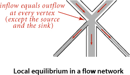
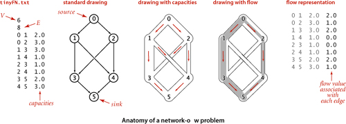
Because of this broad applicability, it is worthwhile to consider precise statements of the terms and concepts that we have just informally introduced:
We sometimes refer to edges as having infinite capacity or, equivalently, as being uncapacitated. That might mean that we do not compare flow against capacity for such edges, or we might use a sentinel value that is guaranteed to be larger than any flow value. We refer to the total flow into a vertex (the sum of the flows on its incoming edges) as the vertex’s inflow, the total flow out of a vertex (the sum of the flows on its outgoing edges) as the vertex’s outflow, and the difference between the two (inflow minus outflow) as the vertex’s netflow. To simplify the discussion, we also assume that there are no edges leaving t or entering s.
We refer to the sink’s inflow as the st-flow value. We will see in PROPOSITION C that the value is also equal to the source’s outflow. With these definitions, the formal statement of our basic problem is straightforward:
Maximum st-flow. Given an st-flow network, find an st-flow such that no other flow from s to t has a larger value.
For brevity, we refer to such a flow as a maxflow and the problem of finding one in a network as the maxflow problem. In some applications, we might be content to know just the maxflow value, but we generally want to know a flow (edge flow values) that achieves that value.
The FlowEdge and FlowNetwork APIs shown on page 890 are straightforward extensions of APIs from CHAPTER 3. We will consider on page 896 an implementation of FlowEdge that is based on adding an instance variable containing the flow to our WeightedEdge class from page 610. Flows have a direction, but we do not base FlowEdge on WeightedDirectedEdge because we work with a more general abstraction known as the residual network that is described below, and we need each edge to appear in the adjacency lists of both its vertices to implement the residual network. The residual network allows us to both add and subtract flow and to test whether an edge is full to capacity (no more flow can be added) or empty (no flow can be subtracted). This abstraction is implemented via the methods residualCapacity() and addResidualFlow() that we will consider later. The implementation of FlowNetwork is virtually identical to our EdgeWeightedGraph implementation on page 611, so we omit it. To simplify the file format, we adopt the convention that the source is 0 and the sink is V − 1. These APIs leave a straightforward goal for maxflow algorithms: build a network, then assign values to the flow instance variables in the client’s edges that maximize flow through the network. Shown at right are client methods for certifying whether a flow is feasible. Typically, we might do such a check as the final action of a maxflow algorithm.
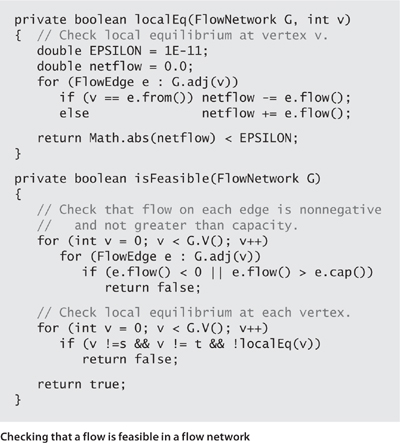
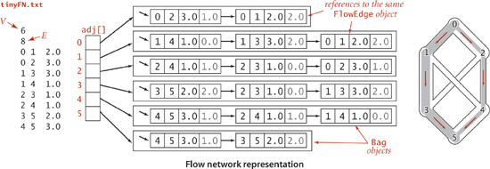
An effective approach to solving max-flow problems was developed by L. R. Ford and D. R. Fulkerson in 1962. It is a generic method for increasing flows incrementally along paths from source to sink that serves as the basis for a family of algorithms. It is known as the Ford-Fulkerson algorithm in the classical literature; the more descriptive term augmenting-path algorithm is also widely used. Consider any directed path from source to sink through an st-flow network. Let x be the minimum of the unused capacities of the edges on the path. We can increase the network’s flow value by at least x by increasing the flow in all edges on the path by that amount. Iterating this action, we get a first attempt at computing flow in a network: find another path, increase the flow along that path, and continue until all paths from source to sink have at least one full edge (so that we can no longer increase flow in this way). This algorithm will compute the maxflow in some cases but will fall short in other cases. Our introductory example on page 886 is such an example. To improve the algorithm such that it always finds a maxflow, we consider a more general way to increase the flow, along a path from source to sink through the network’s underlying undirected graph. The edges on any such path are either forward edges, which go with the flow (when we traverse the path from source to sink, we traverse the edge from its source vertex to its destination vertex), or backward edges, which go against the flow (when we traverse the path from source to sink, we traverse the edge from its destination vertex to its source vertex). Now, for any path from source to sink with no full forward edges and no empty backward edges, we can increase the amount of flow in the network by increasing flow in forward edges and decreasing flow in backward edges. The amount by which the flow can be increased is limited by the minimum of the unused capacities in the forward edges and the flows in the backward edges. Such a path is called an augmenting path. An example is shown at right. In the new flow, at least one of the forward edges along the path becomes full or at least one of the backward edges along the path becomes empty. The process just sketched is the basis for the classical Ford-Fulkerson maxflow algorithm (augmenting-path method). We summarize it as follows:
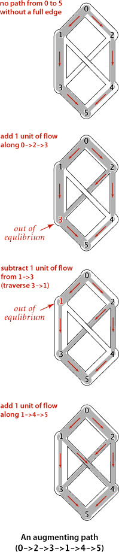
Remarkably (under certain technical conditions about numeric properties of the flow), this method always finds a maxflow, no matter how we choose the paths. Like the greedy MST algorithm discussed in SECTION 4.3 and the generic shortest-paths method discussed in SECTION 4.4, it is a generic algorithm that is useful because it establishes the correctness of a whole family of more specific algorithms. We are free to use any method whatever to choose the path. Several algorithms that compute sequences of augmenting paths have been developed, all of which lead to a maxflow. The algorithms differ in the number of augmenting paths they compute and the costs of finding each path, but they all implement the Ford-Fulkerson algorithm and find a maxflow.
To show that any flow computed by any implementation of the Ford-Fulkerson algorithm is indeed a maxflow, we prove a key fact known as the maxflow-mincut theorem. Understanding this theorem is a crucial step in understanding network-flow algorithms. As suggested by its name, the theorem is based on a direct relationship between flows and cuts in networks, so we begin by defining terms that relate to cuts. Recall from SECTION 4.3 that a cut in a graph is a partition of the vertices into two disjoint sets, and a crossing edge is an edge that connects a vertex in one set to a vertex in the other set. For flow networks, we refine these definitions as follows:
Each crossing edge corresponding to an st-cut is either an st-edge that goes from a vertex in the set containing s to a vertex in the set containing t, or a ts-edge that goes in the other direction. We sometimes refer to the set of crossing st-edges as a cut set. The capacity of an st-cut in a flow network is the sum of the capacities of that cut’s st-edges, and the flow across an st-cut is the difference between the sum of the flows in that cut’s st-edges and the sum of the flows in that cut’s ts-edges. Removing all the st-edges (the cut set) in an st-cut of a network leaves no path from s to t, but adding any one of them back could create such a path. Cuts are the appropriate abstraction for many applications. For our oil-flow model, a cut provides a way to completely stop the flow of oil from the source to the sink. If we view the capacity of the cut as the cost of doing so, to stop the flow in the most economical manner is to solve the following problem:
Minimum st-cut. Given an st-network, find an st-cut such that the capacity of no other cut is smaller. For brevity, we refer to such a cut as a mincut and to the problem of finding one in a network as the mincut problem.
The statement of the mincut problem includes no mention of flows, and these definitions might seem to digress from our discussion of the augmenting-path algorithm. On the surface, computing a mincut (a set of edges) seems easier than computing a maxflow (an assignment of weights to all the edges). On the contrary, the maxflow and mincut problems are intimately related. The augmenting-path method itself provides a proof. That proof rests on the following basic relationship between flows and cuts, which immediately gives a proof that local equilibrium in an st-flow implies global equilibrium as well (the first corollary) and an upper bound on the value of any st-flow (the second corollary):

It is possible to design a maxflow with noninteger flows, even when capacities are all integers, but we do not need to consider such flows. From a theoretical standpoint, this observation is important: allowing capacities and flows that are real numbers, as we have done and as is common in practice, can lead to unpleasant anomalous situations. For example, it is known that the Ford-Fulkerson algorithm could, in principle, lead to an infinite sequence of augmenting paths that does not even converge to the maxflow value. The version of the algorithm that we consider is known to always converge, even when capacities and flows are real-valued. No matter what method we choose to find an augmenting path and no matter what paths we find, we always end up with a flow that does not admit an augmenting path, which therefore must be a maxflow.
The generic Ford-Fulkerson algorithm does not specify any particular method for finding an augmenting path. How can we find a path with no full forward edges and no empty backward edges? To this end, we begin with the following definition:
If an edge e from v to w is empty (fe is equal to 0), there is a single corresponding edge v->w with capacity ce in the residual; if it is full (fe is equal to ce), there is a single corresponding edge w->v with capacity fe in the residual; and if it is neither empty nor full, both v->w and w->v are in the residual with their respective capacities. An example is shown at the bottom of this page. At first, the residual network representation is a bit confusing because the edges corresponding to flow go in the opposite direction of the flow itself. The forward edges represent the remaining capacity (the amount of flow we can add if traversing that edge); the backward edges represent the flow (the amount of flow we can remove if traversing that edge). The code on page 896 gives the methods in the FlowEdge class that we need to implement the residual network abstraction. With these implementations, our algorithms work with the residual network, but they are actually examining capacities and changing flow (through edge references) in the client’s edges. The methods from() and other() allow us to process edges in either orientation:
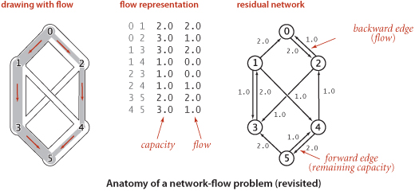
e.other(v) returns the endpoint of e that is not v. The methods residualCapTo() and addResidualFlowTo() implement the residual network. Residual networks allow us to use graph search to find an augmenting path, since any path from source to sink in the residual network corresponds directly to an augmenting path in the original network. Increasing the flow along the path implies making changes in the residual network: for example, at least one edge on the path becomes full or empty, so at least one edge in the residual network changes direction or disappears (but our use of an abstract residual network means that we just check for positive capacity and do not need to actually insert and delete edges).
Perhaps the simplest Ford-Fulkerson implementation is to use a shortest augmenting path (as measured by the number of edges on the path, not flow or capacity). This method was suggested by J. Edmonds and R.Karp in 1972. In this case, the search for an augmenting path amounts to breadth-first search (BFS) in the residual network, precisely as described in SECTION 4.1, as you can see by comparing the hasAugmentingPath() implementation below to our breadth-first search implemention in ALGORITHM 4.2 on page 540 (the residual graph is a digraph, and this is fundamentally a digraph processing algorithm, as mentioned on page 685). This method forms the basis for the full implementation in ALGORITHM 6.14 on the next page, a remarkably concise implementation based on the tools we have developed. For brevity, we refer to this method as the shortest-augmenting-path maxflow algorithm. A trace for our example is shown in detail on page 899.
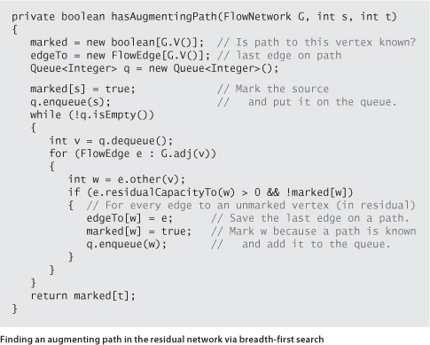
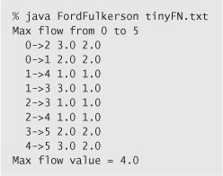
A larger example is shown in the figure above. As is evident from the figure, the lengths of the augmenting paths form a nondecreasing sequence. This fact is a first key to analyzing the performance of the algorithm.
The upper bound of PROPOSITION G is very conservative. For example, the graph shown in the figure at the top of page 900 has 11 vertices and 20 vertices, so the bound says that the algorithm uses no more than 110 augmenting paths. In fact, it uses 14.
Another Ford-Fulkerson implementation, suggested by Edmonds and Karp, is the following: Augment along the path that increases the flow by the largest amount. For brevity, we refer to this method as the maximum-capacity-augmenting-path maxflow algorithm. We can implement this (and other approaches) by using a priority queue and slightly modifying our implementation of Dijkstra’s shortest-paths algorithm, choosing edges from the priority queue to give the maximum amount of flow that can be pushed through a forward edge or diverted from a backward edge. Or, we might look for a longest augmenting path, or make a random choice. A complete analysis establishing which method is best is a complex task, because their running times depend on
• The number of augmenting paths needed to find a maxflow
• The time needed to find each augmenting path
These quantities can vary widely, depending on the network being processed and on the graph-search strategy. Several other approaches to solving the maxflow problem have also been devised, some of which compete well with the Ford-Fulkerson algorithm in practice. Developing a mathematical model of maxflow algorithms that can validate such hypotheses, however, is a significant challenge. The analysis of maxflow algorithms remains an interesting and active area of research. From a theoretical standpoint, worst-case performance bounds for numerous maxflow algorithms have been developed, but the bounds are generally substantially higher than the actual costs observed in applications and also quite a bit higher than the trivial (linear-time) lower bound. This gap between what is known and what is possible is larger than for any other problem that we have considered (so far) in this book.
Remarkably, the Ford-Fulkerson algorithm computes not only a maximum st-flow but also a minimum st-cut. The augmenting path algorithm terminates when there are no more augmenting paths with respect to the flow f. Upon termination, let Cs be the set of all vertices that can be reached from s with an undirected path that does not contain a full forward or empty backward edge, and let Ct be the remaining vertices. Then, as in the proof of PROPOSITION F, (Cs , Ct) is a minimum st-cut. ALGORITHM 6.14 provides an inCut() method that identifies the vertices on the s-side of the mincut. It accomplishes this by using the information left over in marked[] from the last call to hasAugmentingPath().
THE PRACTICAL APPLICATION of maxflow algorithms remains both an art and a science. The art lies in picking the strategy that is most effective for a given practical situation; the science lies in understanding the essential nature of the problem. Are there new data structures and algorithms that can solve the maxflow problem in linear time, or can we prove that none exist?
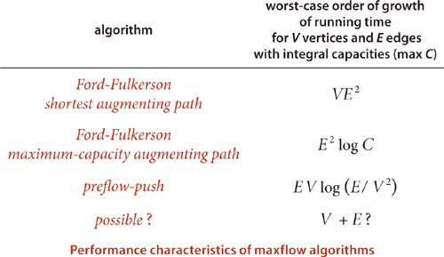
Throughout this book, we have focused on articulating specific problems, then developing algorithms and data structures to solve them. In several cases (many of which are listed below), we have found it convenient to solve a problem by formulating it as an instance of another problem that we have already solved. Formalizing this notion is a worthwhile starting point for studying relationships among the diverse problems and algorithms that we have studied.
This concept is certainly a familiar one in software development: when you use a library method to solve a problem, you are reducing your problem to the one solved by the library method. In this book, we have informally referred to problems that we can reduce to a given problem as applications.
We first encountered reduction in CHAPTER 2, to express the idea that an efficient sorting algorithm is useful for efficiently solving many other problems, that may not seem to be at all related to sorting. For example, we considered the following problems, among many others:
Finding the median. Given a set of numbers, find the median value.
Distinct values. Determine the number of distinct values in a set of numbers.
Scheduling to minimize average completion time. Given a set of jobs of specified duration to be completed, how can we schedule the jobs on a single processor so as to minimize their average completion time?
Now, we have to pay attention to cost when doing a reduction. For example, we can find the median of a set of numbers in linear time, but using the reduction to sorting will end up costing linearithmic time. Even so, such extra cost might be acceptable, since we can use an exisiting sort implementation. Sorting is valuable for three reasons:
• It is useful in its own right.
• We have an efficient algorithms for solving it.
• Many problems reduce to it.
Generally, we refer to a problem with these properties as a problem-solving model. Like well-engineered software libraries, well-designed problem-solving models can greatly expand the universe of problems that we can efficiently address. One pitfall in focusing on problem-solving models is known as Maslow’s hammer, an idea widely attributed to A. Maslow in the 1960s: If all you have is a hammer, everything seems to be a nail. By focusing on a few problem-solving models, we may use them like Maslow’s hammer to solve every problem that comes along, depriving ourselves of the opportunity to discover better algorithms to solve the problem, or even new problem-solving models. While the models we consider are important, powerful, and broadly useful, it is also wise to consider other possibilities.
In SECTION 4.4, we revisited the idea of reduction in the context of shortest-paths algorithms. We considered the following problems, among many others:
Single-source shortest paths in undirected graphs. Given an edge-weighted undirected graph with nonnegative weights and a source vertex s, support queries of the form Is there a path from s to a given target vertex v? If so, find a shortest such path (one whose total weight is minimal).
Parallel precedence-constrained scheduling. Given a set of jobs of specified duration to be completed, with precedence constraints that specify that certain jobs have to be completed before certain other jobs are begun, how can we schedule the jobs on identical processors (as many as needed) such that they are all completed in the minimum amount of time while still respecting the constraints?
Arbitrage. Find an arbitrage opportunity in a given table of currency-conversion rates.
Again, the latter two problems do not seem to be directly related to shortest-paths problems, but we saw that shortest paths is an effective way to address them. These examples, while important, are merely indicative. A large number of important problems, too many to survey here, are known to reduce to shortest paths—it is an effective and important problem-solving model.
Maxflow algorithms are also important in a broad context. We can remove various restrictions on the flow network and solve related flow problems; we can solve other network- and graph-processing problems; and we can solve problems that are not network problems at all. For example, consider the following problems.
Job placement. A college’s job-placement office arranges interviews for a set of students with a set of companies; these interviews result in a set of job offers. Assuming that an interview followed by a job offer represents mutual interest in the student taking a job at the company, it is in everyone’s best interests to maximize the number of job placements. Is it possible to match every student with a job? What is the maximum number of jobs that can be filled?
Product distribution. A company that manufactures a single product has factories, where the product is produced; distribution centers, where the product is stored temporarily; and retail outlets, where the product is sold. The company must distribute the product from factories through distribution centers to retail outlets on a regular basis, using distribution channels that have varying capacities. Is it possible to get the product from the warehouses to the retail outlets such that supply meets demand everywhere?
Network reliability. A simplified model considers a computer network as consisting of a set of trunk lines that connect computers through switches such that there is the possibility of a switched path through trunk lines connecting any two given computers. What is the minimum number of trunk lines that can be cut to disconnect some pair of computers?
Again, these problems seem to be unrelated to one another and to flow networks, but they all reduce to maxflow.
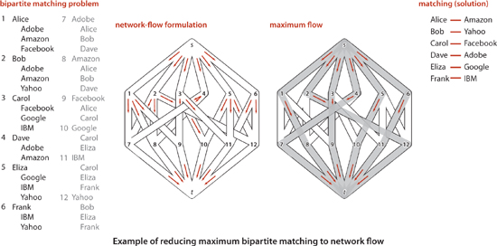
For example, as illustrated in the figure at right, an augmenting-path max-flow algorithm might use the paths s->1->7->t, s->2->8->t, s->3->9->t, s->5->10->t, s->6->11->t, and s->4->7->1->8->2->12->t to compute the matching 1-8, 2-12, 3-9, 4-7, 5-10, and 6-11. Thus, there is a way to match all the students to jobs in our example. Each augmenting path fills one edge from the source and one edge into the sink. Note that these edges are never used as back edges, so there are at most V augmenting paths. and a total running time proportional to VE.
SHORTEST PATHS AND MAXFLOW ARE IMPORTANT problem-solving models because they have the same properties that we articulated for sorting:
• They are useful in their own right.
• We have efficient algorithms for solving them.
• Many problems reduce to them.
This short discussion serves only to introduce the idea. If you take a course in operations research, you will learn many other problems that reduce to these and many other problem-solving models.
One of the cornerstones of operations research is linear programming (LP). It refers to the idea of reducing a given problem to the following mathematical formulation:
Linear programming. Given a set of M linear inequalities and linear equations involving N variables, and a linear objective function of the N variables, find an assignment of values to the variables that maximizes the objective function, or report that no feasible assignment exists.
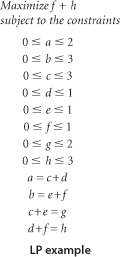
Linear programming is an extremely important problem-solving model because
• A great many important problems reduce to linear programming
• We have efficient algorithms for solving linear-programming problems
The “useful in its own right” phrase is not needed in this litany that we have stated for other problem-solving models because so many practical problems reduce to linear programming.
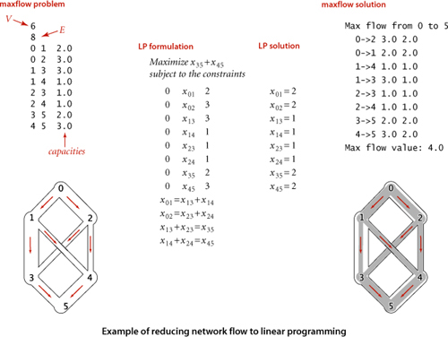
The “many, many other problems” in the statement of PROPOSITION K refers to three ideas. First, it is very easy to extend a model and to add constraints. Second, reduction is transitive, so all the problems that reduce to shortest paths and maximum flow also reduce to linear programming. Third, and more generally, optimization problems of all sorts can be directly formulated as linear programming problems. Indeed, the term linear programming means “formulate an optimization problem as a linear programming problem.” This use predates the use of the word programming for computers. Equally important as the idea that a great many problems reduce to linear programming is the fact that efficient algorithms have been known for linear programming for many decades. The most famous, developed by G. Dantzig in the 1940s, is known as the simplex algorithm. Simplex is not difficult to understand (see the bare-bones implementation on the booksite). More recently, the ellipsoid algorithm presented by L. G. Khachian in 1979 led to the development of interior point methods in the 1980s that have proven to be an effective complement to the simplex algorithm for the huge linear programming problems that people are solving in modern applications. Nowadays, linear programming solvers are robust, extensively tested, efficient, and critical to the basic operation of modern corporations. Uses in scientific contexts and even in applications programming are also greatly expanding. If you can model your problem as a linear programming problem, you are likely to be able to solve it.
IN A VERY REAL SENSE, LINEAR PROGRAMMING IS THE PARENT of problem-solving models, since so many problems reduce to it. Naturally, this idea leads to the question of whether there is an even more powerful problem-solving model than linear programming. What sorts of problems do not reduce to linear programming? Here is an example of such a problem:
Load balancing. Given a set of jobs of specified duration to be completed, how can we schedule the jobs on two identical processors so as to minimize the completion time of all the jobs?
Can we articulate a more general problem-solving model and solve instances of problems within that model efficiently? This line of thinking leads to the idea of intractability, our last topic.
The algorithms that we have studied in this book generally are used to solve practical problems and therefore consume reasonable amounts of resources. The practical utility of most of the algorithms is obvious, and for many problems we have the luxury of several efficient algorithms to choose from. Unfortunately, many other problems arise in practice that do not admit such efficient solutions. What’s worse, for a large class of such problems we cannot even tell whether or not an efficient solution exists. This state of affairs has been a source of extreme frustration for programmers and algorithm designers, who cannot find any efficient algorithm for a wide range of practical problems, and for theoreticians, who have been unable to find any proof that these problems are difficult. A great deal of research has been done in this area and has led to the development of mechanisms by which new problems can be classified as being “hard to solve” in a particular technical sense. Though much of this work is beyond the scope of this book, the central ideas are not difficult to learn. We introduce them here because every programmer, when faced with a new problem, should have some understanding of the possibility that there exist problems for which no one knows any algorithm that is guaranteed to be efficient.
One of the most beautiful and intriguing intellectual discoveries of the 20th century, developed by A. Turing in the 1930s, is the Turing machine, a simple model of computation that is general enough to embody any computer program or computing device. A Turing machine is a finite-state machine that can read inputs, move from state to state, and write outputs. Turing machines form the foundation of theoretical computer science, starting with the following two ideas:
• Universality. All physically realizable computing devices can be simulated by a Turing machine. This idea is known as the Church-Turing thesis. This is a statement about the natural world and cannot be proven (but it can be falsified). The evidence in favor of the thesis is that mathematicians and computer scientists have developed numerous models of computation, but they all have been proven equivalent to the Turing machine.
• Computability. There exist problems that cannot be solved by a Turing machine (or by any other computing device, by universality). This is a mathematical truth. The halting problem (no program can guarantee to determine whether a given program will halt) is a famous example of such a problem.
In the present context, we are interested in a third idea, which speaks to the efficiency of computing devices:
• Extended Church-Turing thesis. The order of growth of the running time of a program to solve a problem on any computing device is within a polynomial factor of some program to solve the problem on a Turing machine (or any other computing device).
Again, this is a statement about the natural world, buttressed by the idea that all known computing devices can be simulated by a Turing machine, with at most a polynomial factor increase in cost. In recent years, the idea of quantum computing has given some researchers reason to doubt the extended Church-Turing thesis. Most agree that, from a practical point of view, it is probably safe for some time, but many researchers are hard at work on trying to falsify the thesis.
The purpose of the theory of intractability is to separate problems that can be solved in polynomial time from problems that (probably) require exponential time to solve in the worst case. It is useful to think of an exponential-time algorithm as one that, for some input of size N, takes time proportional to 2N (at least). The substance of the argument does not change if we replace 2 by any number α > 1. We generally take as granted that an exponential-time algorithm cannot be guaranteed to solve a problem of size 100 (say) in a reasonable amount of time, because no one can wait for an algorithm to take 2100 steps, regardless of the speed of the computer. Exponential growth dwarfs technological changes: a supercomputer may be a trillion times faster than an abacus, but neither can come close to solving a problem that requires 2100 steps. Sometimes the line between “easy” and “hard” problems is a fine one. For example, we studied an algorithm in SECTION 4.1 that can solve the following problem:
Shortest-path length. What is the length of the shortest path from a given vertex s to a given vertex t in a given graph?
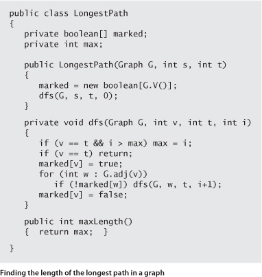
But we did not study algorithms for the following problem, which seems to be virtually the same:
Longest-path length. What is the length of the longest simple path from a given vertex s to a given vertex t in a given graph?
The crux of the matter is this: as far as we know, these problems are nearly at opposite ends of the spectrum with respect to difficulty. Breadth-first search yields a solution for the first problem in linear time, but all known algorithms for the second problem take exponential time in the worst case. The code at the bottom of the previous page shows a variant of depth-first search that accomplishes the task. It is quite similar to depth-first search, but it examines all simple paths from s to t in the digraph to find the longest one.
The great disparity between problems that can be solved with “efficient” algorithms of the type we have been studying in this book and problems where we need to look for a solution among a potentially huge number of possibilities makes it possible to study the interface between them with a simple formal model. The first step is to characterize the type of problem that we study:
Four particular problems that are of interest in our discussion of intractability are shown at the top of the facing page. These problems are known as satisfiability problems. Now, all that is required to establish that a problem is a search problem is to show that any solution is sufficiently well-characterized that you can efficiently certify that it is correct. Solving a search problem is like searching for a “needle in a haystack” with the sole proviso that you can recognize the needle when you see it. For example, if you are given an assignment of values to variables in each of the satisfiability problems at the top of page 913, you easily can certify that each equality or inequality is satisfied, but searching for such an assignment is a totally different task. The name NP is commonly used to describe search problems—we will describe the reason for the name on page 914:
NP is nothing more than a precise characterization of all the problems that scientists, engineers, and applications programmers aspire to solve with programs that are guaranteed to finish in a feasible amount of time.
Linear equation satisfiability. Given a set of M linear equations involving N variables, find an assignment of values to the variables that satisfies all of the equations, or report that none exists.
Linear inequality satisfiability (search formulation of linear programming). Given a set of M linear inequalities involving N variables, find an assignment of values to the variables that satisfies all of the inequalities, or report that none exists.
0-1 integer linear inequality satisfiability (search formulation of 0-1 integer linear programming). Given a set of M linear inequalities involving N integer variables, find an assignment of the values 0 or 1 to the variables that satisfies all of the inequalities, or report that none exists.
Boolean satisfiability. Given a set of M equations involving and and or operations on N boolean variables, find an assignment of values to the variables that satisfies all of the equations, or report that none exists.
Selected search problems
The concept of search problems is one of many ways to characterize the set of problems that form the basis of the study of intractability. Other possibilities are decision problems (does a solution exist?) and optimization problems (what is the best solution)? For example, the longest-paths length problem on page 911 is an optimization problem, not a search problem (given a solution, we have no way to verify that it is a longest-path length). A search version of this problem is to find a simple path connecting all the vertices (this problem is known as the Hamiltonian path problem). A decision version of the problem is to ask whether there exists a simple path connecting all the vertices. Arbitrage, boolean satisfiability, and Hamiltonian path are search problems; to ask whether a solution exists to any of these problems is a decision problem; and shortest/longest paths, maxflow, and linear programming are all optimization problems. While not technically equivalent, search, decision, and optimization problems typically reduce to one another (see EXERCISE 6.58 and 6.59) and the main conclusions we draw apply to all three types of problems.
The definition of NP says nothing about the difficulty of finding the solution, just certifying that it is a solution. The second of the two sets of problems that form the basis of the study of intractability, which is known as P, is concerned with the difficulty of finding the solution. In this model, the efficiency of an algorithm is a function of the number of bits used to encode the input.
Implicit in the definition is the idea that the polynomial time bound is a worst-case bound. For a problem to be in P, there must exist an algorithm that can guarantee to solve it in polynomial time. Note that the polynomial is not specified at all. Linear, linearithmic, quadratic, and cubic are all polynomial time bounds, so this definition certainly covers the standard algorithms we have studied so far. The time taken by an algorithm depends on the computer used, but the extended Church-Turing thesis renders that point moot—it says that a polynomial-time solution on any computing device implies the existence of a polynomial-time solution on any other computing device. Sorting belongs to P because (for example) insertion sort runs in time proportional to N2 (the existence of linearithmic sorting algorithms is not relevant in this context), as does shortest paths, linear equation satisfiability, and many others. Having an efficient algorithm to solve a problem is a proof that the problem is in P. In other words, P is nothing more than a precise characterization of all the problems that scientists, engineers, and applications programmers do solve with programs that are guaranteed to finish in a feasible amount of time.
The N in NP stands for nondeterminism. It represents the idea that one way (in theory) to extend the power of a computer is to endow it with the power of nondeterminism: to assert that when an algorithm is faced with a choice of several options, it has the power to “guess” the right one. For the purposes of our discussion, we can think of an algorithm for a nondeterministic machine as “guessing” the solution to a problem, then certifying that the solution is valid. In a Turing machine, nondeterminism is as simple as defining two different successor states for a given state and a given input and characterizing solutions as all legal paths to the desired result. Nondeterminism may be a mathematical fiction, but it is a useful idea. For example, in SECTION 5.4, we used nondeterminism as a tool for algorithm design—our regular expression pattern-matching algorithm is based on efficiently simulating a nondeterministic machine.
Nondeterminism is such a powerful notion that it seems almost absurd to consider it seriously. Why bother considering an imaginary tool that makes difficult problems seem trivial? The answer is that, powerful as nondeterminism may seem, no one has been able to prove that it helps for any particular problem! Put another way, no one has been able to find a single problem that can be proven to be in NP but not in P (or even prove that one exists), leaving the following question open:
Does P = NP?
This question was first posed in a famous letter from K. Gödel to J. von Neumann in 1950 and has completely stumped mathematicians and computer scientists ever since. Other ways of posing the question shed light on its fundamental nature:
• Are there any hard-to-solve search problems?
• Would we be able to solve some search problems more efficiently if we could build a nondeterministic computing device?
Not knowing the answers to these questions is extremely frustrating because many important practical problems belong to NP but may or may not belong to P (the best known deterministic algorithms could take exponential time). If we could prove that a problem does not belong to P, then we could abandon the search for an efficient solution to it. In the absence of such a proof, there is the possibility that some efficient algorithm has gone undiscovered. In fact, given the current state of our knowledge, there could be some efficient algorithm for every problem in NP, which would imply that many efficient algorithms have gone undiscovered. Virtually no one believes that P = NP, and a considerable amount of effort has gone into proving the contrary, but this remains the outstanding open research problem in computer science.
Recall from page 903 that we show that a problem A reduces to another problem B by demonstrating that we can solve any instance of A in three steps:
• Transform it to an instance of B.
• Solve that instance of B.
• Transform the solution of B to be a solution of A.
As long as we can perform the transformations (and solve B) efficiently, we can solve A efficiently. In the present context, for efficient we use the weakest conceivable definition: to solve A we solve at most a polynomial number of instances of B, using transformations that require at most polynomial time. In this case, we say that A poly-time reduces to B. Before, we used reduction to introduce the idea of problem-solving models that can significantly expand the range of problems that we can solve with efficient algorithms. Now, we use reduction in another sense: to prove a problem to be hard to solve. If a problem A is known to be hard to solve, and A poly-time reduces to B, then B must be hard to solve, too. Otherwise, a guaranteed polynomial-time solution to B would give a guaranteed polynomial-time solution to A.
This statement is a meaningful statement about the relative difficulty of solving these two problems even in the absence of a precise definition of hard to solve. In the present context, by “hard to solve,” we mean “not in P.” We generally use the word intractable to refer to problems that are not in P. Starting with the seminal work of R. Karp in 1972, researchers have shown literally tens of thousands of problems from a wide variety of applications areas to be related by reduction relationships of this sort. Moreover, these relationships imply much more than just relationships between the individual problems, a concept that we now address.
Many, many problems are known to belong to NP but probably do not belong to P. That is, we can easily certify that any given solution is valid, but, despite considerable effort, no one has been able to develop an efficient algorithm to find a solution. Remarkably, all of these many, many problems have an additional property that provides convincing evidence that P ≠ NP:
This definition enables us to upgrade our definition of “hard to solve” to mean “intractable unless P = NP.” If any NP-complete problem can be solved in polynomial time on a deterministic machine, then so can all problems in NP (i.e., P = NP). That is, the collective failure of all researchers to find efficient algorithms for all of these problems might be viewed as a collective failure to prove that P = NP. NP-complete problems, meaning that we do not expect to find guaranteed polynomial-time algorithms. Most practical search problems are known to be either in P or NP-complete.
Reduction uses the NP-completeness of one problem to imply the NP-completeness of another. But reduction cannot be used in one case: how was the first problem proven to be NP-complete? This was done independently by S. Cook and L. Levin in the early 1970s.
The Cook-Levin theorem, in conjunction with the thousands and thousands of polytime reductions from NP-complete problems that have followed it, leaves us with two possible universes: either P = NP and no intractable search problems exist (all search problems can be solved in polynomial time); or P ≠ NP, there do exist intractable search problems (some search problems cannot be solved in polynomial time). NP-complete problems arise frequently in important natural practical applications, so there has been strong motivation to find good algorithms to solve them. The fact that no good algorithm has been found for any of these problems is surely strong evidence that P ≠ NP, and most researchers certainly believe this to be the case. On the other hand, the fact that no one has been able to prove that any of these problems do not belong to P could be construed to comprise a similar body of circumstantial evidence on the other side. Whether or not P = NP, the practical fact is that the best known algorithm for any of the NP-complete problems takes exponential time in the worst case.
To prove that a search problem is in P, we need to exhibit a polynomial-time algorithm for solving it, perhaps by reducing it to a problem known to be in P. To prove that a problem in NP is NP-complete, we need to show that some known NP-complete problem is poly-time reducible to it: that is, that a polynomial-time algorithm for the new problem could be used to solve the NP-complete problem, and then could, in turn, be used to solve all problems in NP. Thousands and thousands of problems have been shown to be NP-complete in this way, as we did for integer linear programming in PROPOSITION L. The list on page 920, which includes several of the problems addressed by Karp, is representative, but contains only a tiny fraction of the known NP-complete problems. Classifying problems as being easy to solve (in P) or hard to solve (NP-complete) can be:
• Straightforward. For example, the venerable Gaussian elimination algorithm proves that linear equation satisfiability is in P.
• Tricky but not difficult. For example, developing a proof like the proof of PROPOSITION A takes some experience and practice, but it is easy to understand.
• Extremely challenging. For example, linear programming was long unclassified, but Khachian’s ellipsoid algorithm proves that linear programming is in P.
• Open. For example, graph isomorphism (given two graphs, find a way to rename the vertices of one to make it identical to the other) and factor (given an integer, find a nontrivial factor) are still unclassified.
This is a rich and active area of current research, still involving thousands of research papers per year. As indicated by the last few entries on the list on page 920, all areas of scientific inquiry are affected. Recall that our definition of NP encompasses the problems that scientists, engineers, and applications programmers aspire to solve feasibly—all such problems certainly need to be classified!
Boolean satisfiability. Given a set of M equations involving N boolean variables, find an assignment of values to the variables that satisfies all of the equations, or report that none exists.
Integer linear programming. Given a set of M linear inequalities involving N integer variables, find an assignment of values to the variables that satisfies all of the inequalities, or report that none exists.
Load balancing. Given a set of jobs of specified duration to be completed and a time bound T, how can we schedule the jobs on two identical processors so as to complete them all by time T?
Vertex cover. Given a graph and a integer C, find a set of C vertices such that each edge of the graph is incident to at least one vertex of the set.
Hamiltonian path. Given a graph, find a simple path that visits each vertex exactly once, or report that none exists.
Protein folding. Given energy level M, find a folded three-dimensional conformation of a protein having potential energy less than M.
Ising model. Given an Ising model on a lattice of dimension three and an energy threshhold E, is there a subgraph with free energy less than E?
Risk portfolio of a given return. Given an investment portfolio with a given total cost, a given return, risk values assigned to each investment, and a threshold M, find a way to allocate the investments such that the risk is less than M.
Some famous NP-complete problems
Some sort of solution to this vast panoply of problems must be found in practice, so there is intense interest in finding ways to address them. It is impossible to do justice to this vast field of study in one paragraph, but we can briefly describe various approaches that have been tried. One approach is to change the problem and find an “approximation” algorithm that finds not the best solution but a solution guaranteed to be close to the best. For example, it is easy to find a solution to the Euclidean traveling salesperson problem that is within a factor of 2 of the optimal. Unfortunately, this approach is often not sufficient to ward off NP-completeness, when seeking improved approximations. Another approach is to develop an algorithm that solves efficiently virtually all of the instances that do arise in practice, even though there exist worst-case inputs for which finding a solution is infeasible. The most famous example of this approach are the integer linear programming solvers, which have been workhorses for many decades in solving huge optimizaiton problems in countless industrial applications. Even though they could require exponential time, the inputs that arise in practice evidently are not worst-case inputs. A third approach is to work with “efficient” exponential algorithms, using a technique known as backtracking to avoid having to check all possible solutions. Finally, there is quite a large gap between polynomial and exponential time that is not addressed by the theory. What about an algorithm that runs in time proportional to Nlog N or 2√N?
ALL THE APPLICATIONS AREAS we have studied in this book are touched by NP-completeness: NP-complete problems arise in elementary programming, in sorting and searching, in graph processing, in string processing, in scientific computing, in systems programming, in operations research, and in any conceivable area where computing plays a role. The most important practical contribution of the theory of NP-completeness is that it provides a mechanism to discover whether a new problem from any of these diverse areas is “easy” or “hard.” If one can find an efficient algorithm to solve a new problem, then there is no difficulty. If not, a proof that the problem is NP-complete tells us that developing an efficient algorithm would be a stunning achievement (and suggests that a different approach should perhaps be tried). The scores of efficient algorithms that we have examined in this book are testimony that we have learned a great deal about efficient computational methods since Euclid, but the theory of NP completeness shows that, indeed, we still have a great deal to learn.
6.1 Complete the implementation predictCollisions() and Particle as described in the text. There are three equations governing the elastic collision between a pair of hard discs: (a) conservation of linear momentum, (b) conservation of kinetic energy, and (c) upon collision, the normal force acts perpendicular to the surface at the collision point (assuming no friction or spin). See the booksite for more details.
6.2 Develop a version of CollisionSystem, Particle, and Event that handles multiparticle collisions. Such collisions are important when simulating the break in a game of billiards. (This is a difficult exercise!)
6.3 Develop a version of CollisionSystem, Particle, and Event that works in three dimensions.
6.4 Explore the idea of improving the performance of simulate() in CollisionSystem by dividing the region into rectangular cells and adding a new event type so that you only need to predict collisions with particles in one of nine adjacent cells in any time quantum. This approach reduces the number of predictions to calculate at the cost of monitoring the movement of particles from cell to cell.
6.5 Introduce the concept of entropy to CollisionSystem and use it to confirm classical results.
6.6 Brownian motion. In 1827, the botanist Robert Brown observed the motion of wildflower pollen grains immersed in water using a microscope. He observed that the pollen grains were in a random motion, following what would become known as Brownian motion. This phenomenon was discussed, but no convincing explanation was provided until Einstein provided a mathematical one in 1905. Einstein’s explanation: the motion of the pollen grain particles was caused by millions of tiny molecules colliding with the larger particles. Run a simulation that illustrates this phenomenon.
6.7 Temperature. Add a method temperature() to Particle that returns the product of its mass and the square of the magitude of its velocity divided by dkB where d =2 is the dimension and kB =1.3806503 × 10−23 is Boltzmann’s constant. The temperature of the system is the average value of these quantities. Then add a method temperature() to CollisionSystem and write a driver that plots the temperature periodically, to check that it is constant.
6.8 Maxwell-Boltzmann. The distribution of velocity of particles in the hard disc model obeys the Maxwell-Boltzmann distribution (assuming that the system has thermalized and particles are sufficiently heavy that we can discount quantum-mechanical effects), which is known as the Rayleigh distribution in two dimensions. The distribution shape depends on temperature. Write a driver that computes a histogram of the particle velocities and test it for various temperatures.
6.9 Arbitrary shape. Molecules travel very quickly (faster than a speeding jet) but diffuse slowly because they collide with other molecules, thereby changing their direction. Extend the model to have a boundary shape where two vessels are connected by a pipe containing two different types of particles. Run a simulation and measure the fraction of particles of each type in each vessel as a function of time.
6.10 Rewind. After running a simulation, negate all velocities and then run the system backward. It should return to its original state! Measure roundoff error by measuring the difference between the final and original states of the system.
6.11 Pressure. Add a method pressure() to Particle that measures pressure by accumulating the number and magnitude of collisions against walls. The pressure of the system is the sucm of these quantities. Then add a method pressure() to CollisionSystem and write a client that validates the equation pv = nRT.
6.12 Index priority queue implementation. Develop a version of CollisionSystem that uses an index priority queue to guarantee that the size of the priority queue is at most linear in the number of particles (instead of quadratic or worse).
6.13 Priority queue performance. Instrument the priority queue and test Pressure at various temperatures to identify the computational bottleneck. If warranted, try switching to a different priority-queue implementation for better performance at high temperatures.
6.14 Suppose that, in a three-level tree, we can afford to keep a links in internal memory, between b and 2b links in pages representing internal nodes, and between c and 2c items in pages representing external nodes. What is the maximum number of items that we can hold in such a tree, as a function of a, b, and c?
6.15 Develop an implementation of Page that represents each B-tree node as a BinarySearchST object.
6.16 Extend BTreeSET to develop a BTreeST implementation that associates keys with values and supports our full ordered symbol table API that includes min(), max(), floor(), ceiling(), deleteMin(), deleteMax(), select(), rank(), and the two-argument versions of size() and get().
6.17 Write a program that uses StdDraw to visualize B-trees as they grow, as in the text.
6.18 Estimate the average number of probes per search in a B-tree for S random searches, in a typical cache system, where the T most-recently-accessed pages are kept in memory (and therefore add 0 to the probe count). Assume that S is much larger than T.
6.19 Web search. Develop an implementation of Page that represents B-tree nodes as text files on web pages, for the purposes of indexing (building a concordance for) the web. Use a file of search terms. Take web pages to be indexed from standard input. To keep control, take a command-line parameter m, and set an upper limit of 10m internal nodes (check with your system administrator before running for large m). Use an m digit number to name your internal nodes. For example, when m is 4, your nodes names might be BTreeNode0000, BTreeNode0001, BTreeNode0002, and so forth. Keep pairs of strings on pages. Add a close() operation to the API, to sort and write. To test your implementation, ook for yourself and your friends on your university’s website.
6.20 B* trees. Consider the sibling split (or B*-tree) heuristic for B-trees: When it comes time to split a node because it contains M entries, we combine the node with its sibling. If the sibling has k entries with k < M − 1, we reallocate the items giving the sibling and the full node each about (M+k)/2 entries. Otherwise, we create a new node and give each of the three nodes about 2M/3 entries. Also, we allow the root to grow to hold about 4M/3 items, splitting it and creating a new root node with two entries when it reaches that bound. State bounds on the number of probes used for a search or an insertion in a B*-tree of order M with N items. Compare your bounds with the corresponding bounds for B-trees (see PROPOSITION B). Develop an insert implementation for B*-trees.
6.21 Write a program to compute the average number of external pages for a B-tree of order M built from N random insertions into an initially empty tree. Run your program for reasonable values of M and N.
6.22 If your system supports virtual memory, design and conduct experiments to compare the performance of B-trees with that of binary search, for random searches in a huge symbol table.
6.23 For your internal-memory implementation of Page in EXERCISE 6.15, run experiments to determine the value of M that leads to the fastest search times for a B-tree implementation supporting random search operations in a huge symbol table. Restrict your attention to values of M that are multiples of 100.
6.24 Run experiments to compare search times for internal B-trees (using the value of M determined in the previous exercise), linear probing hashing, and red-black trees for random search operations in a huge symbol table.
6.25 Give, in the style of the figure on page 882, the suffixes, sorted suffixes, index() and lcp() tables for the following strings:
a. abacadaba
b. mississippi
c. abcdefghij
d. aaaaaaaaaa
6.26 Identify the problem with the following code fragment to compute all the suffixes for suffix sort:
Answer: It uses quadratic time and quadratic space.
6.27 Some applications require a sort of cyclic rotations of a text, which all contain all the characters of the text. For i from 0 to N − 1, the ith cyclic rotation of a text of length N is the last N − i characters followed by the first i characters. Identify the problem with the following code fragment to compute all the cyclic rotations:
Answer: It uses quadratic time and quadratic space.
6.28 Design a linear-time algorithm to compute all the cyclic rotations of a text string.
Answer:
6.29 Under the assumptions described in SECTION 1.4. give the memory usage of a SuffixArray object with a string of length N.
6.30 Longest common substring. Write a SuffixArray client LCS that take two filenames as command-line arguments, reads the two text files, and finds the longest substring that appears in both in linear time. (In 1970, D. Knuth conjectured that this task was impossible.) Hint: Create a suffix array for s#t where s and t are the two text strings and # is a character that does not appear in either.
6.31 Burrows-Wheeler transform. The Burrows-Wheeler transform (BWT) is a transformation that is used in data compression algorithms, including bzip2 and in high-throughput sequencing in genomics. Write a SuffixArray client that computes the BWT in linear time, as follows: Given a string of length N (terminated by a special end-of-file character $ that is smaller than any other character), consider the N-by-N matrix in which each row contains a different cyclic rotation of the original text string. Sort the rows lexicographically. The Burrows-Wheeler transform is the rightmost column in the sorted matrix. For example, the BWT of mississippi$ is ipssm$pissii. The Burrows-Wheeler inverse transform (BWI) inverts the BWT. For example, the BWI of ipssm$pissii is mississippi$. Also write a client that, given the BWT of a text string, computes the BWI in linear time.
6.32 Circular string linearization. Write a SuffixArray client that, given a string, finds the cyclic rotation that is the smallest lexicographically in linear time. This problem arises in chemical databases for circular molecules, where each molecule is represented as a circular string, and a canonical representation (smallest cyclic rotation) is used to support search with any rotation as key. (See EXERCISE 6.27 and EXERCISE 6.28.)
6.33 Longest k-repeated substring. Write a SuffixArray client that, given a string and an integer k, find the longest substring that is repeated k or more times.
6.34 Long repeated substrings. Write a SuffixArray client that, given a string and an integer L, finds all repeated substrings of length L or more.
6.35 k-gram frequency counts. Develop and implement an ADT for preprocessing a string to support efficiently answering queries of the form How many times does a given k-gram appear? Each query should take time proportional to k log N in the worst case, where N is the length of the string.
6.36 If capacities are positive integers less than M, what is the maximum possible flow value for any st-network with V vertices and E edges? Give two answers, depending on whether or not parallel edges are allowed.
6.37 Give an algorithm to solve the maxflow problem for the case that the network forms a tree if the sink is removed.
6.38 True or false. If true provide a short proof, if false give a counterexample:
a. In any max flow, there is no directed cycle on which every edge carries positive flow
b. There exists a max flow for which there is no directed cycle on which every edge carries positive flow
c. If all edge capacities are distinct, the max flow is unique
d. If all edge capacities are increased by an additive constant, the min cut remains unchanged
e. If all edge capacities are multiplied by a positive integer, the min cut remains unchanged
6.39 Complete the proof of PROPOSITION G: Show that each time an edge is a critical edge, the length of the augmenting path through it must increase by 2.
6.40 Find a large network online that you can use as a vehicle for testing flow algorithms on realistic data. Possibilities include transportation networks (road, rail, or air), communications networks (telephone or computer connections), or distribution networks. If capacities are not available, devise a reasonable model to add them. Write a program that uses the interface to implement flow networks from your data. If warranted, develop additional private methods to clean up the data.
6.41 Write a random-network generator for sparse networks with integer capacities between 0 and 220. Use a separate class for capacities and develop two implementations: one that generates uniformly distributed capacities and another that generates capacities according to a Gaussian distribution. Implement client programs that generate random networks for both weight distributions with a well-chosen set of values of V and E so that you can use them to run empirical tests on graphs drawn from various distributions of edge weights.
6.42 Write a program that generates V random points in the plane, then builds a flow network with edges (in both directions) connecting all pairs of points within a given distance d of each other, setting each edge’s capacity using one of the random models described in the previous exercise.
6.43 Basic reductions. Develop FordFulkerson clients for finding a maxflow in each of the following types of flow networks:
• Undirected
• No constraint on the number of sources or sinks or on edges entering the source or leaving the sink
• Lower bounds on capacities
• Capacity constraints on vertices
6.44 Product distribution. Suppose that a flow represents products to be transferred by trucks between cities, with the flow on edge u-v representing the amount to be taken from city u to city v in a given day. Write a client that prints out daily orders for truckers, telling them how much and where to pick up and how much and where to drop off. Assume that there are no limits on the supply of truckers and that nothing leaves a given distribution point until everything has arrived.
6.45 Job placement. Develop a FordFulkerson client that solves the job-placement problem, using the reduction in PROPOSITION J. Use a symbol table to convert symbolic names into integers for use in the flow network.
6.46 Construct a family of bipartite matching problems where the average length of the augmenting paths used by any augmenting-path algorithm to solve the corresponding maxflow problem is proportional to E.
6.47 st-connectivity. Develop a FordFulkerson client that, given an undirected graph G and vertices s and t, finds the minimum number of edges in G whose removal will disconnect t from s.
6.48 Disjoint paths. Develop a FordFulkerson client that, given an undirected graph G and vertices s and t, finds the maximum number of edge-disjoint paths from s to t.
6.49 Find a nontrivial factor of 37703491.
6.50 Prove that the shortest-paths problem reduces to linear programming.
6.51 Could there be an algorithm that solves an NP-complete problem in an average time of Nlog N, if P ≠ NP? Explain your answer.
6.52 Suppose that someone discovers an algorithm that is guranteed to solve the boolean satisfiability problem in time proportional to 1.1N Does this imply that we can solve other NP-complete problems in time proportional to 1.1N?
6.53 What would be the significance of a program that could solve the integer linear programming problem in time proportional to 1.1N?
6.54 Give a poly-time reduction from vertex cover to 0-1 integer linear inequality satisfiability.
6.55 Prove that the problem of finding a Hamiltonian path in a directed graph is NP complete, using the NP-completeness of the Hamiltonian-path problem for undirected graphs.
6.56 Suppose that two problems are known to be NP-complete. Does this imply that there is a poly-time reduction from one to the other?
6.57 Suppose that X is NP-complete, X poly-time reduces to Y, and Y poly-time reduces to X. Is Y necessarily NP-complete?
Answer: No, since Y may not be in NP.
6.58 Suppose that we have an algorithm to solve the decision version of boolean satisfiability, which indicates that there exists an assignment of truth values to the variables that satisfies the boolean expression. Show how to find the assignment.
6.59 Suppose that we have an algorithm to solve the decision version of the vertex cover problem, which indicates that there exists a vertex cover of a given size. Show how to solve the optimization version of finding the vertex cover of minimum cardinality.
6.60 Explain why the optimization version of the vertex cover problem is not necessarily a search problem.
Answer: There does not appear to be an efficient way to certify that a purported solution is the best possible (even though we could use binary search on the search version of the problem to find the best solution).
6.61 Suppose that X and Y are two search problems an that X poly-time reduces to Y. Which of the following can we infer?
a. If Y is NP-complete then so is X.
b. If X is NP-complete then so is Y.
c. If X is in P, then Y is in P.
d. If Y is in P, then X is in P.
6.62 Suppose that P ≠ NP. Which of the following can we infer?
e. If X is NP-complete, then X cannot be solved in polynomial time.
f. If X is in NP, then X cannot be solved in polynomial time.
g. If X is in NP but not NP-complete, then X can be solved in polynomial time.
h. If X is in P, then X is not NP-complete.